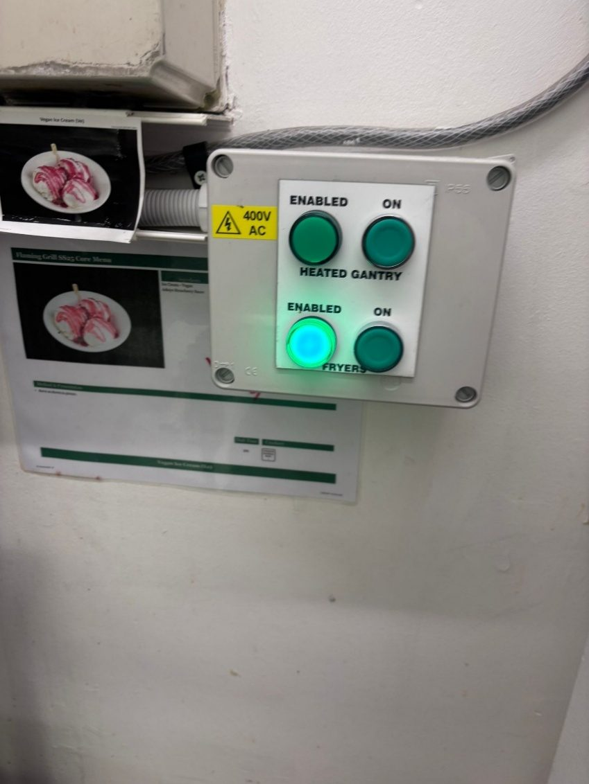
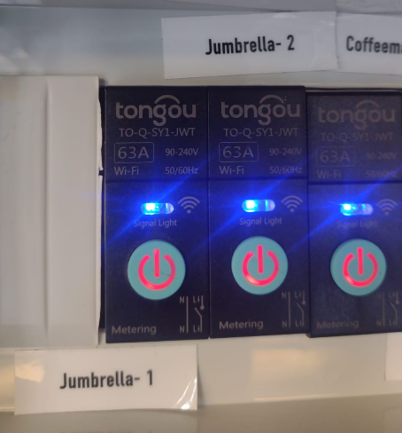
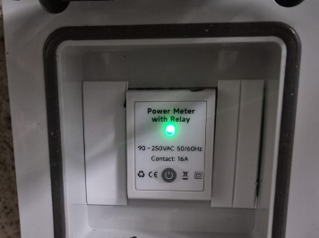
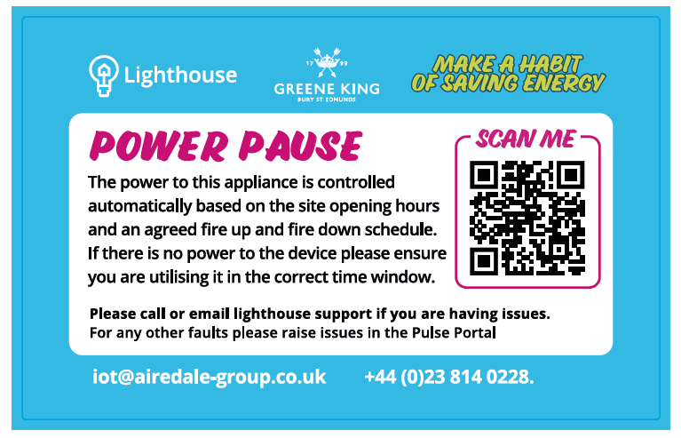
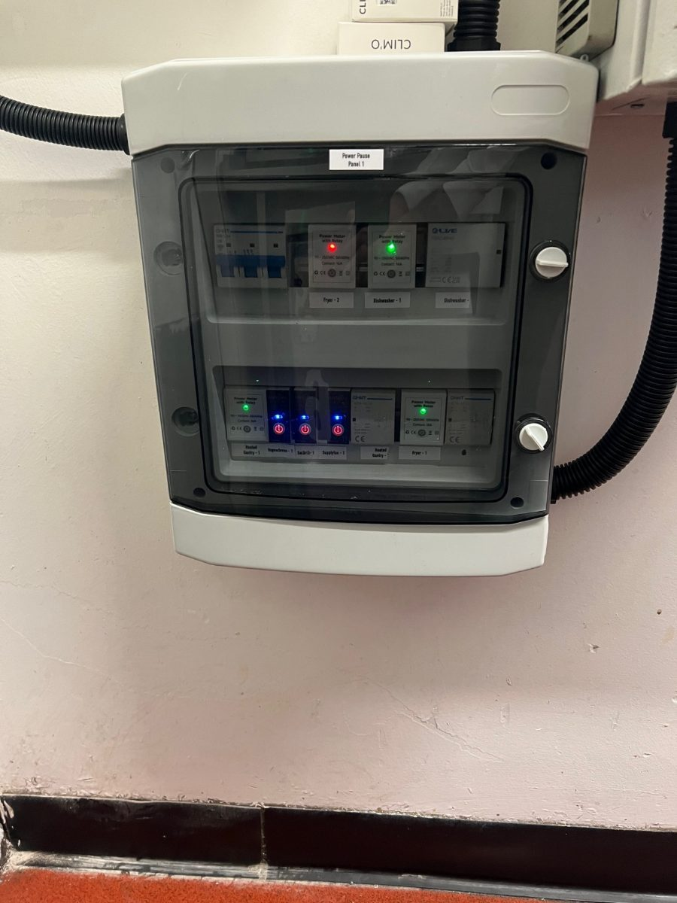
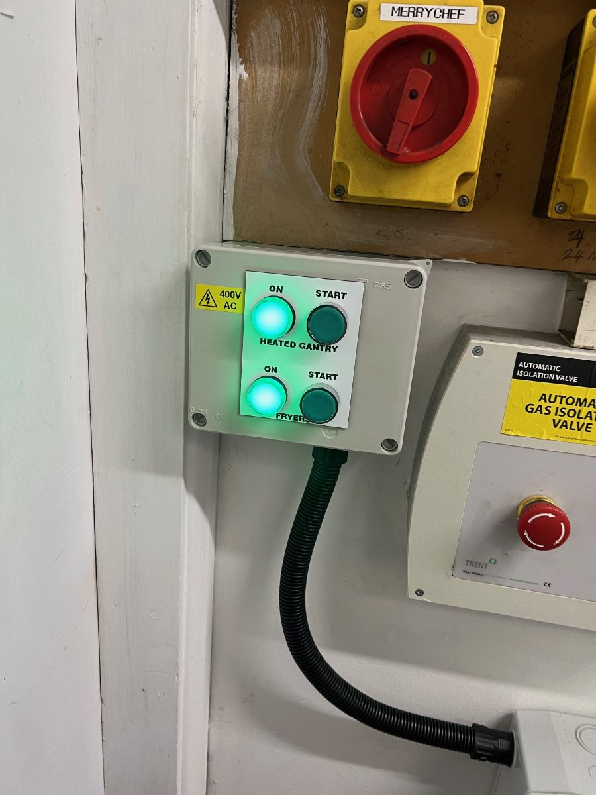
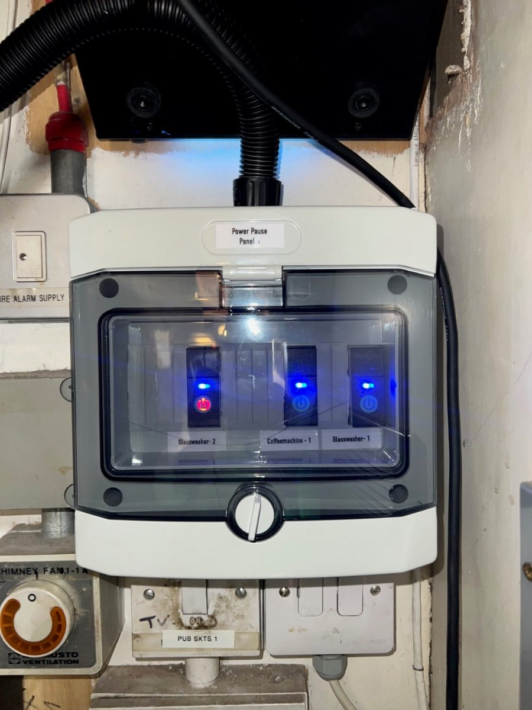
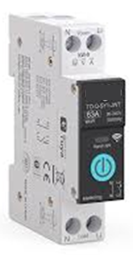
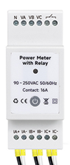
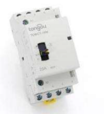

Lighthouse PowerPause – Smart Appliance Control – Contractor Version
PowerPause is part of the Lighthouse IoT roll-out. It makes sure kitchen appliances aren’t switched on too early or left running too late, saving energy and reducing costs.
How It Works
- Appliances are switched on/off automatically at agreed times.
- Times are set in line with the pub’s operating hours.
- Changes to schedules must be authorised by the Area Manager.
- Ad-hoc exceptions (e.g. football matches, TV events, festive hours) should be raised with the Pub Support Team, who will coordinate with the Area Manager.
Safety Interlock Appliances (Fryers & Gantries)
- Controlled via the interlock panel in the kitchen.
- Green light ON → Appliance available to use.
- Press the green button → You’ll hear the contactor click and the appliance powers up.

All Devices connected to Power Pause
- Controlled through Power Pause panel (pictured below)
- Appliances have agreed schedules with Greene King (attached underneath)
- 2 different devices (Tongou & Owon)
- Both devices have an override switch (for contractor use only)

(Press this button once, do not hold down this will remove from the system)
Tongou (On)

(Press this button once, do not hold down this will remove from the system)
Owon Meter (On)
If you need to override the PowerPause for maintenance purposes, locate the PowerPause panel usually located by the kitchen distribution boards, behind the appliance or mounted on the ceiling.
Look for This Label
- Every appliance controlled by PowerPause will have this label attached:

Lighthouse Support
For any help or schedule adjustments, contact the Lighthouse IoT Support Team:
E: iot@airedale-group.co.uk
T: 023 814 0228
Which Appliances Are We Controlling
- Supply & Extract Fans
- Merry Chefs
- Fryers
- Grills
- Griddles
- Bain Maire / Heated Gantry / Super Pass
- Dishwashers
- Glasswasher
- Carveries
- Combi Ovens
- Coffee Machines
- Outside Lights
- External Heaters / Jumbrellas
Agreed Fire Up Fire Down times (based on serving hours)
| Equipment | Closed | Operating | Serving | Operating | Closed |
|---|---|---|---|---|---|
| Glasswasher-1 | Off | -30mins | On | On | +1 hr |
| Glasswasher-2 | Off | On | On | On | +1 hr |
| Dishwasher-1 | Off | On | On | On | Off |
| Supply Fan | Off | On | -45mins | +30mins | Off |
| Extract Fan | Off | Off | -45mins | +30mins | Off |
| Salamander Grills | Off | Off | -30mins | +30mins | Off |
| Heated Gantry with Baine Marie | Off | Off | -20mins | +30mins | Off |
| Heated Gantry | Off | Off | On | +30mins | Off |
| Chargrill (Electric) | Off | Off | -30mins | +30mins | Off |
| Chargrill (Gas) | Off | Off | -45mins | +30mins | Off |
| Griddle 1 | Off | Off | -30mins | +30mins | Off |
| Griddle 2 | Off | Off | -15mins | +30mins | Off |
| Fryer 1 | Off | Off | -15 mins | +30mins | Off |
| Fryer 2 (Linked to Fryer 1) | Off | Off | -15 mins | +30mins | Off |
| Hot Cabinet | Off | Off | -15 mins | +30mins | Off |
| Merry Chef | Off | Off | -10mins | +30mins | Off |
| Jumbrella/External Heater | Off | On | On | +30mins | Off |
| Outside Lights | Off | On | On | On | +1 hr |
| Heat Lamps | Off | Off | On | Off | Off |
| CoffeeMachine | Off | -15mins | On | On | Off |
Example Kitchen PowerPause Panel

Example Interlock Panel

This is a safety interlock panel for the bainemarie/heated gantries and the fryers. Press the start button to enable the contactor
Example Ceiling Panel
Please note on the ceiling and back of appliance panel the existing 13A sockets still exists for isolation and for IR testing.
Example Bar Panel

Manual Override Button
Single Phase Appliances

(Do not hold down the button)
Three Phase Appliances

(Do not hold down the button)
Don’t forget to press the start button on the interlock panel for those appliances that have them
Contactor Override
If the PowerPause is faulty and the pub requires the appliance to be manually overridden to operate. Please either power the coil on the contactor or where present use the contactor manual on button

Contact and Report to Airedale Lighthouse Team
Please report any issues to the Lighthouse Team on iot@airedale-group.co.uk
Many thanks